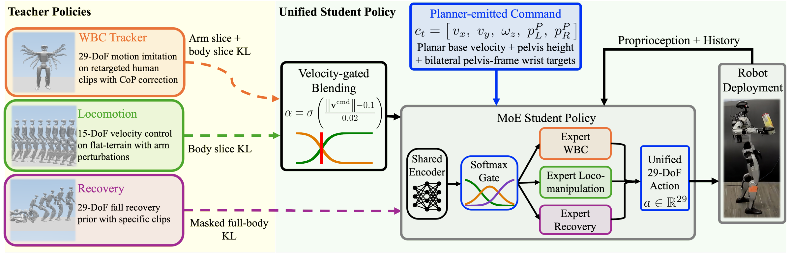
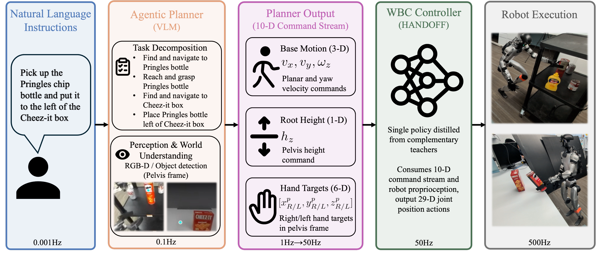

Abstract
The interface between task planning and whole-body control is what makes humanoids deployable — yet existing controllers demand dense kinematic references that planners struggle to produce. HANDOFF is a single whole-body controller built around a compact, explicit 10-D task-space command, distilled via context-conditioned multi-teacher KL into a mixture-of-experts student from three complementary specialists: whole-body motion tracking, locomotion, and fall-recovery. On the Unitree G1 it matches state-of-the-art velocity tracking with one of the largest robust manipulation workspaces, and is driven end-to-end by a VLM agentic planner with no task-specific data or controller fine-tuning.
A compact, planner-friendly command space
Instead of a dense full-body kinematic stream, HANDOFF takes one small, explicit 10-D command:
planar base velocity $(v_x, v_y, \omega_z)$, root height $z$, and bilateral pelvis-frame wrist targets $p_L^P, p_R^P$. Each slot matches a planner family, and the same vector composes into coordinated whole-body behavior — e.g. low $z$ with forward wrist targets yields a squat-and-reach.
Distilling complementary teachers

No single regime gives velocity tracking, whole-body manipulation, and fall recovery at once — so three specialists are distilled into one mixture-of-experts student under context-based action-sliced KL:
- WBC — 29-DoF motion tracking; posture, reach, squat, bimanual.
- Locomotion — 15-DoF body slice, velocity tracking.
- Fall-recovery — Adversarial Motion Prior on fall-and-recovery clips.
All fuse into one policy under the single 10-D interface, with no runtime switching; a new specialist plugs in as one teacher head and one context channel.
An agentic planner

A natural-language instruction is decomposed into atomic tasks; a VLM emits pelvis-frame waypoints from RGB-D, a tracker produces $(v_x, v_y, \omega_z)$, and a skill selector sets $z$ and wrist targets $p_{R/L}^P$. The 10-D stream feeds the controller at 50 Hz, tracked on hardware at 500 Hz.
Anything that emits the 10-D command works here — classical planning, agentic, or a VLA.
Task rollouts
One controller, one 10-D interface, many tasks — each driven from a natural-language instruction.
No controller-side change, data collection, or model fine-tuning is required between tasks.
Pick-and-place. “Put the mustard bottle in the red plate.”
Pick-transport-place. “Pick up the W bottle, turn around and put it in the grey bin.”
Squat-pick. “Pick up the Pringles chip bottle, turn right and put it to the left of the Cheez-It box.”
Bimanual pick-and-hand-off. “Pick up the blue box with both hands, turn around and hand it over.”
Bilateral pick-and-place. “Put the mustard bottle on the red plate, then put the orange bottle on the wood board.”
Task continuation after fall recovery (sim). “Pick up the shampoo bottle, turn right and put it in the metal bin” — with push recovery.
Teleoperation demonstration. Whole-body expressiveness driven directly through the 10-D interface — playing badminton.
BibTeX
@article{yang2026handoff,
title = {HANDOFF: Humanoid Agentic Task-Space Whole-Body Control via Distilled Complementary Teachers},
author = {Yang, Lizhi and Li, Junheng and Poddar, Nehar and Hou, Yiling and Huh, Gio and Griffin, Robert and Gkioxari, Georgia and Ames, Aaron D.},
journal = {arXiv preprint arXiv:2606.06493},
year = {2026},
url = {https://arxiv.org/abs/2606.06493}
}